Synthetic Data Studio¶
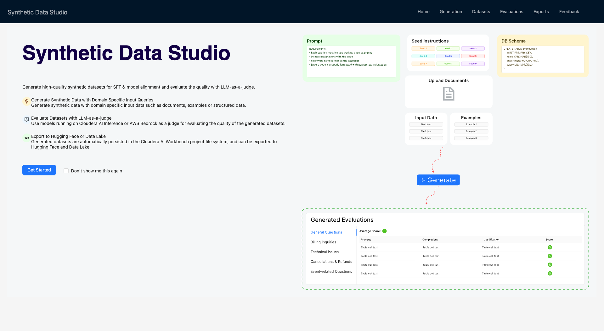
Cloudera Synthetic Data Studio (SDS) is a deployed CAI Application that exposes a REST
API for prompt-driven synthetic data generation and LLM-as-judge quality evaluation.
In this lab, Agent Studio orchestrates SDS via the synthetic_data_studio_tool custom
tool — SDS never touches Impala directly; it only receives the prompts and schema
definitions that Agent Studio builds.
Launching the Studio¶
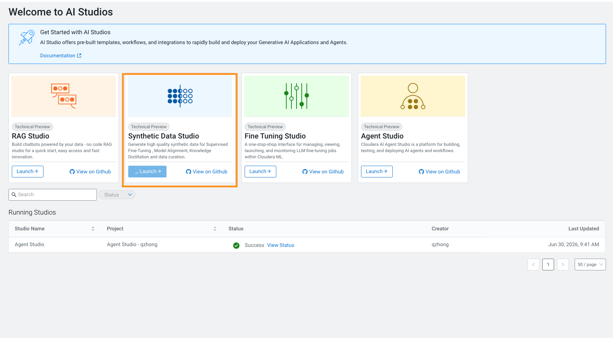
After launching the studio from the UI, enter the model details in the configuration to set up the backbone LLMs.
The following provider options are available:
- AWS Bedrock — the region must be specified correctly.
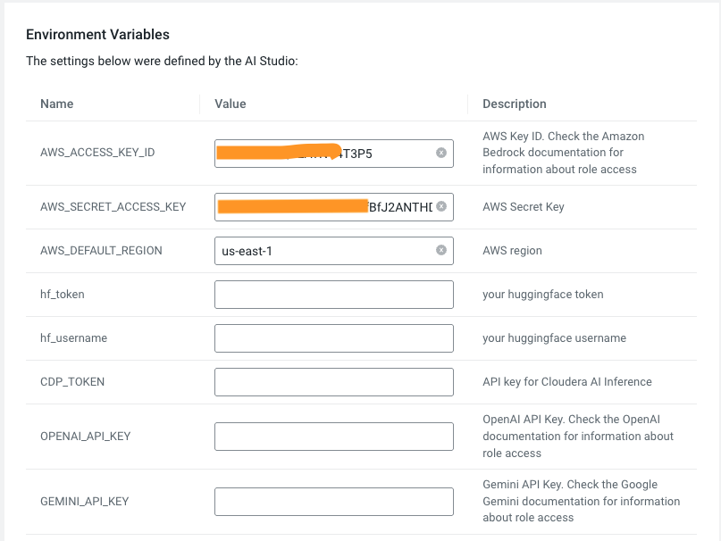
- CAI Inference Service — a CDP token is required.
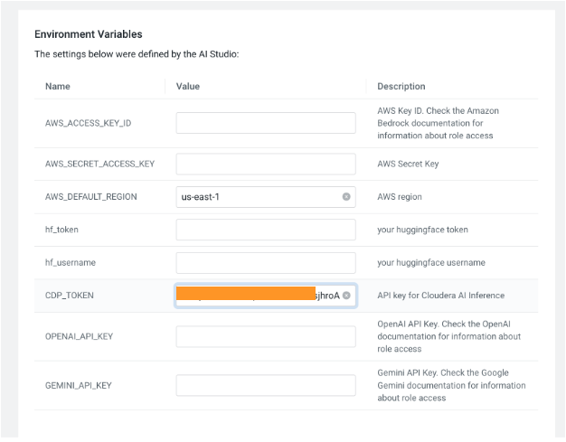
- Other public model providers.
Run a Sample with Template¶
Step 1 — Select a template¶
Choose from the available templates. For this walkthrough, select the text_to_sql template.
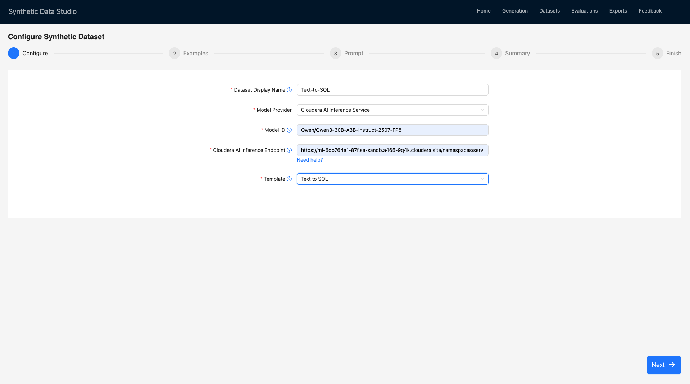
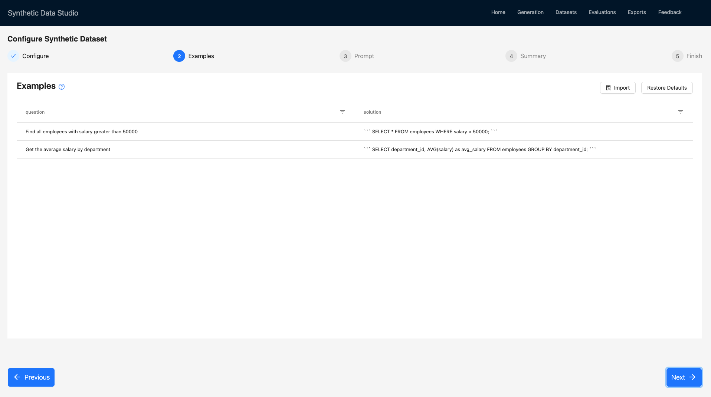
Step 2 — Review examples¶
Synthetic data examples are loaded automatically in this step. These examples serve as reference patterns that instruct the LLM on:
- The exact JSON structure to follow:
question+solutionfields (shown below)
{
"question": "Find all employees with salary greater than 50000",
"solution": "```\nSELECT *\nFROM employees\nWHERE salary > 50000;\n```"
},
{
"question": "Get the average salary by department",
"solution": "```\nSELECT department_id, AVG(salary) as avg_salary\nFROM employees\nGROUP BY department_id;\n```"
}
- That SQL goes inside markdown code blocks
- The semantic correspondence expected between question and answer
Step 3 — Review the prompt and seeds¶
The third step loads the template's prompt for the LLM and the generation seeds. Seed instructions define the initial parameters and constraints for what synthetic data should be generated. They are distinct from examples and schemas. For the Text to SQL template, seeds:
- Control query complexity distribution
- Ensure comprehensive topic coverage
- Control difficulty progression
Set the number of entries per seed — the default is 20.
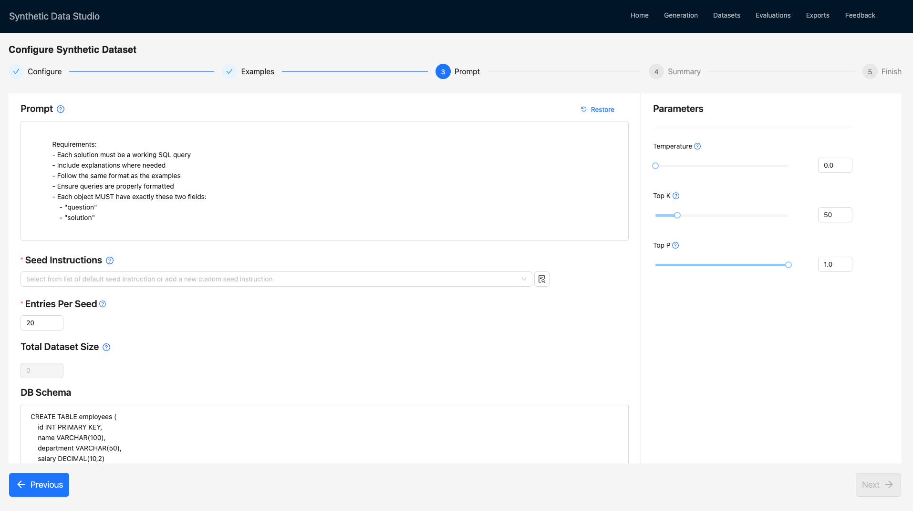
Some templates include built-in extra details at this step.
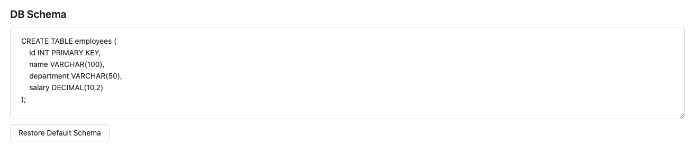
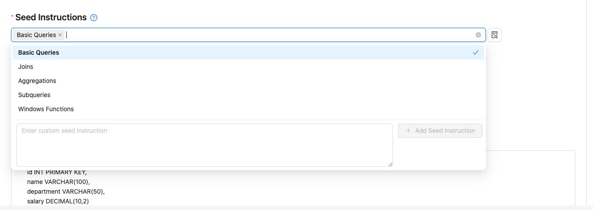
Step 4 — Review the summary¶
Review all settings before proceeding.
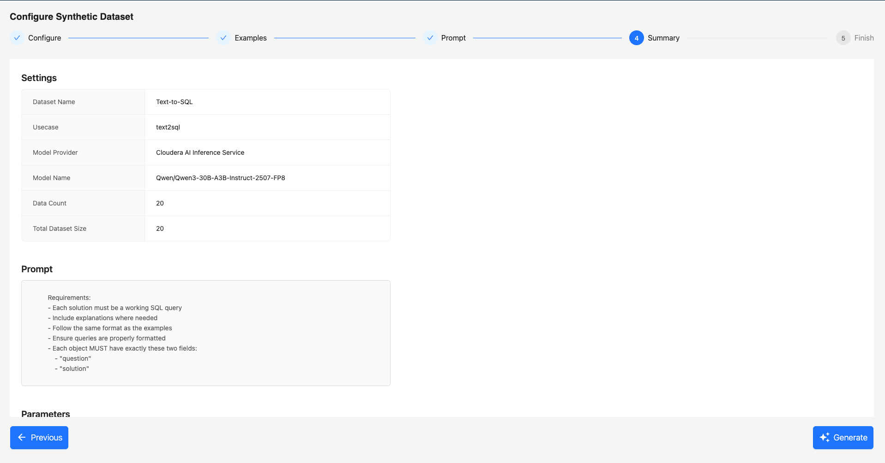
Step 5 — Generate¶
Click Generate to trigger the job. A CAI job is created and started for the generation run.
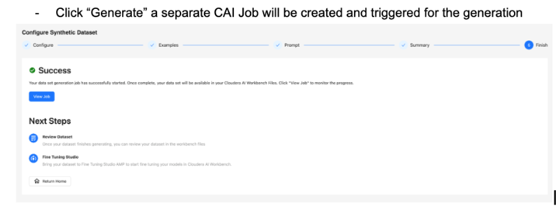
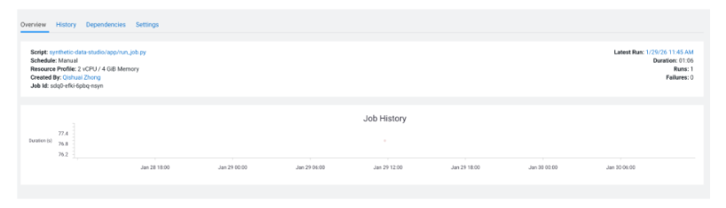
Step 6 — Review the generated dataset¶
Once the job completes, the dataset can be reviewed in the UI. Note that the generated dataset is in JSON format and can also be found in your project's files.
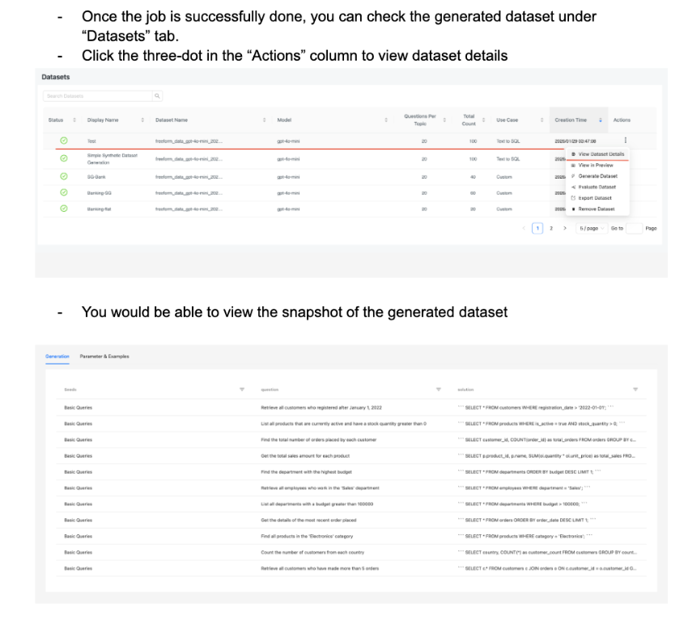
Evaluation¶
Cloudera Synthetic Data Studio includes an out-of-the-box evaluation feature for newly generated datasets.
Step 1 — Locate the dataset¶
Go to the Datasets tab, find the recently generated dataset, and click Evaluate Dataset in the Actions column.
Step 2 — Configure the evaluator¶
You will be redirected to the evaluator setup page, where an LLM-as-a-judge approach is used. Configure the following:
a. Enter a display name for this evaluation.
b. Provide a prompt to guide the LLM in evaluating and validating the generated records. For this template, the prompt is loaded automatically.
c. Select the model to use for evaluation. In practice, using a different model than the one used for generation reduces bias. For today's workshop, you may use the same model.
Similarly, evaluation examples are provided as scoring guidelines for the LLM judge.
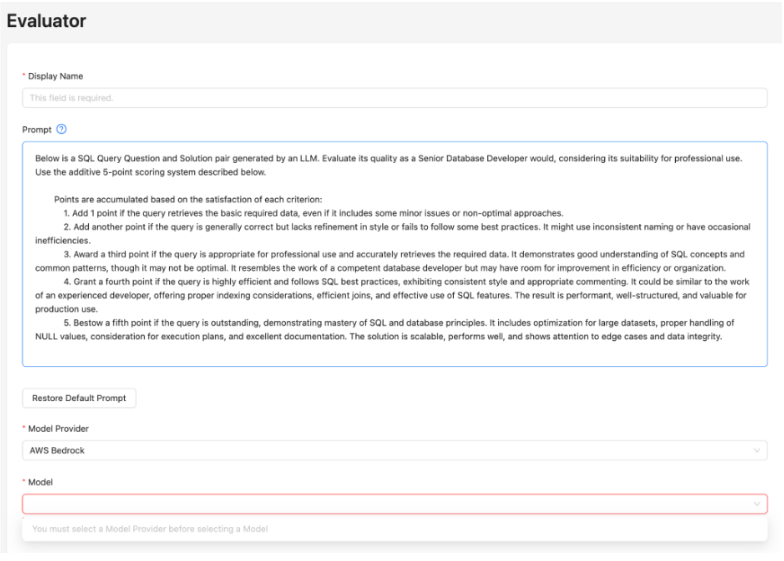
Step 3 — Run the evaluation¶
Click Evaluate to launch a CAI job for the evaluation run.
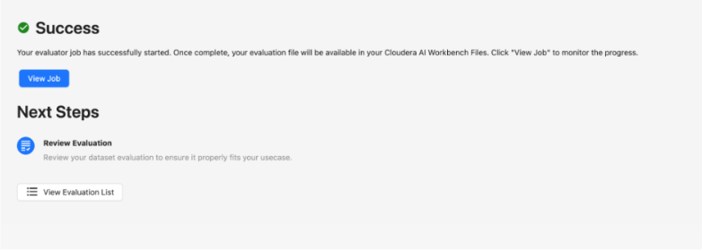
Step 4 — Review evaluation results¶
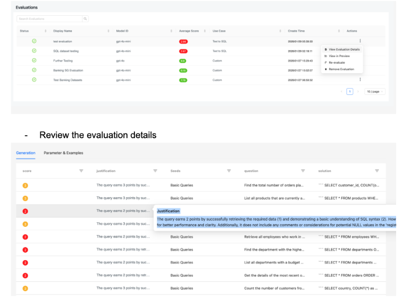
An example evaluation result with justification:
The query earns 2 points by successfully retrieving the required data (1) and demonstrating a basic understanding of SQL syntax (2). However, it lacks refinement in style, such as using specific column names instead of '*' for better performance and clarity. Additionally, it does not include any comments or considerations for potential NULL values in the 'registration_date' field, which would enhance its professionalism.
This result is insufficient for the following reasons:
a. Misaligned with evaluation goals
b. Missing key assessments:
- "Does this query accurately answer: [the original question]?"
- "Are the tables/columns valid per schema?"
- "Would this be good for teaching [specific SQL pattern]?"
- "Is the question-query alignment clear?"
c. Score is too harsh
Step 5 — Re-evaluate with an improved prompt¶
a. Return to the Datasets tab, find the dataset, and click Evaluate Dataset again.
b. Replace the default prompt with the improved scoring criteria below:
Below is a SQL Query Question and Solution pair generated for TEXT2SQL
training data. Evaluate its quality as a training example using these
criteria:
**1. Schema Validity (Critical)**
- Deduct 4 points if any table name doesn't exist in schema
- Deduct 4 points if any column name is invalid for the table
- Deduct 4 points if JOINs reference non-existent FK relationships
- Deduct 2 points if data type operations are inappropriate
**2. Question-Query Alignment (Critical)**
- Deduct 4 points if the SQL doesn't answer the question
- Deduct 2 points if the question is ambiguous or unclear
- Deduct 2 points if required information is missing from results
- Deduct 1 point if the query over-selects columns
**3. SQL Correctness (Critical)**
- Deduct 4 points if query has syntax errors
- Deduct 2 points if GROUP BY missing required columns
- Deduct 2 points if aggregate functions used incorrectly
- Deduct 1 point if column references are ambiguous
**4. Query Patterns (Educational Value)**
Identify which SQL patterns the query demonstrates:
- Basic SELECT/WHERE ✓
- JOINs ✓
- GROUP BY/HAVING ✓
- Aggregate functions ✓
- Subqueries ✓
- Window functions ✓
**5. Clarity & Simplicity**
- Question should be unambiguous (+1 for clarity)
- Query should use straightforward logic (+1 for simplicity)
- Both should be understandable for learning (+1 for pedagogical value)
Scoring (10-point scale, starting at 10):
- 9-10: Excellent training example - valid, clear, correct
- 7-8: Good - minor issues but educational
- 5-6: Acceptable - works but could be clearer
- 3-4: Poor - significant issues, limited value
- 1-2: Unusable - schema/correctness issues
**Output Format:**
{
"score": <number>,
"validity": "<valid/invalid tables, columns, joins>",
"question_alignment": "<does query answer question?>",
"patterns": "<list SQL patterns used>",
"issues": "<any schema/correctness issues>",
"justification": "<explanation of score>"
}
c. Provide clearer evaluation examples:
[
{
"id": "example_1_excellent",
"score": 9,
"quality": "Excellent",
"question": "Find all employees from the Engineering department who earn more than 60000",
"query": "SELECT * FROM employees WHERE department = 'Engineering' AND salary > 60000;",
"validity": "✓ Valid tables (employees exists), valid columns (department, salary exist), correct data types",
"question_alignment": "✓ Query directly answers the question. Selects all columns for comprehensive employee info",
"patterns": "Basic SELECT/WHERE with multiple conditions - trains AND operator usage",
"issues": "None",
"justification": "Score: 9/10. This is an excellent training example. The question is clear and unambiguous ('Engineering' department, salary threshold of 60000). The SQL query is syntactically correct, uses straightforward logic with AND conditions, and directly answers the question. Schema is valid - references existing 'employees' table with correct column names. The query demonstrates a fundamental pattern (filtered SELECT) that's essential for SQL training. Pedagogically valuable because it teaches: table selection, column filtering, and AND operator usage. The only minor improvement would be slightly more explicit column selection, but SELECT * is acceptable here for comprehensive results."
},
{
"id": "example_2_good",
"score": 7,
"quality": "Good",
"question": "What is the average salary for each department? Show department name and average salary",
"query": "SELECT d.name, AVG(e.salary) as avg_salary FROM employees e JOIN departments d ON e.department = d.name GROUP BY d.name;",
"validity": "✓ Valid tables and columns. JOIN uses reasonable logic (department name matching), though assumes 'department' stores department name string rather than ID",
"question_alignment": "✓ Query answers the question. Returns department name and average salary as requested",
"patterns": "JOIN, GROUP BY, aggregate function (AVG) - teaches multi-table queries and aggregation",
"issues": "Minor: Schema uses 'department' as VARCHAR in employees, but the JOIN assumes it contains department names. This works but ideally should use department IDs for proper referential integrity. No syntax errors.",
"justification": "Score: 7/10. A good training example with educational value. The question clearly specifies desired output (department name and average salary). The SQL demonstrates important patterns: JOINs between two tables and GROUP BY with aggregation. Schema validity is generally sound - references exist, though the JOIN condition (e.department = d.name) makes an assumption about data content rather than using proper foreign key relationship. This is still useful for training basic JOINs and aggregations. Deduction: (1) The JOIN logic could be clearer if employees used department_id as FK (-1 point). (2) Aliases (e, d) are good practice and help with clarity. Overall, this teaches JOIN syntax and GROUP BY aggregation effectively despite the minor schema design assumption."
},
{
"id": "example_3_acceptable",
"score": 5,
"quality": "Acceptable",
"question": "Get employees",
"query": "SELECT name, salary, department FROM employees WHERE department IN ('Sales', 'Marketing') ORDER BY salary DESC;",
"validity": "✓ Valid tables (employees) and columns (name, salary, department exist)",
"question_alignment": "⚠ Question is too vague ('Get employees' doesn't specify which ones). Query adds specificity (Sales/Marketing departments) that wasn't in the original question. This creates ambiguity about what was actually intended",
"patterns": "SELECT, WHERE with IN operator, ORDER BY - teaches multiple patterns but lacks focus",
"issues": "Misalignment: Question doesn't specify filtering criteria. Query assumes Sales and Marketing departments without explicit question guidance. This creates training confusion about question interpretation",
"justification": "Score: 5/10. Acceptable but has clarity issues. The query itself is syntactically correct and references valid schema elements. It demonstrates useful patterns (IN operator for multiple values, ORDER BY for sorting). However, the question-query alignment has a significant gap: the question just says 'Get employees' (vague, unclear intent) while the query filters to specific departments that weren't mentioned in the question. For training purposes, this creates ambiguity - is the model learning how to infer missing filter criteria, or learning that questions can be reinterpreted? Better practice: question should explicitly state filtering criteria. The query works and teaches SQL patterns, but the vagueness reduces pedagogical value (-2 points). Useful for learning IN operator and ORDER BY, but the misalignment makes it less ideal for training."
},
{
"id": "example_4_poor",
"score": 3,
"quality": "Poor",
"question": "Find managers and their average employee salary",
"query": "SELECT m.name, AVG(e.salary) FROM departments m JOIN employees e ON m.id = e.manager_id GROUP BY m.id;",
"validity": "✗ Schema issue: employees table has no 'manager_id' column. The query references e.manager_id which doesn't exist in the schema",
"question_alignment": "⚠ Partial: Query attempts to answer the question but the schema reference is invalid. The logic (JOINing on manager_id) is conceptually sound but won't execute",
"patterns": "Attempted JOIN, GROUP BY, AVG - good patterns but broken by schema error",
"issues": "Critical (-4): Column 'manager_id' doesn't exist in employees table. Query will fail at execution. The manager_id exists in departments table but is not a foreign key in employees",
"justification": "Score: 3/10. Poor training example due to critical schema validity issue. While the question is clear (find managers and average salary), the SQL query references a non-existent column (e.manager_id). The employees table schema only has: id, name, department, salary. Manager information is stored in the departments table, not employees. This query will produce a runtime error and teaches incorrect schema understanding. The logic is conceptually reasonable (aggregate salary by manager), but the implementation is fundamentally broken. Deduction: (-4) for referential error - schema shows manager_id belongs to departments, not employees. The query demonstrates a misunderstanding of the schema structure. Not suitable for training because it teaches wrong schema relationships and won't execute."
},
{
"id": "example_5_unusable",
"score": 1,
"quality": "Unusable",
"question": "Get employee data",
"query": "SELCT name, salary FORM employees WHERE department = 'IT';",
"validity": "✗ Multiple syntax errors: 'SELCT' instead of 'SELECT', 'FORM' instead of 'FROM'",
"question_alignment": "⚠ Too vague ('Get employee data') and query has syntax errors so it won't execute at all",
"patterns": "None - cannot evaluate patterns due to syntax errors",
"issues": "Critical (-4): Syntax errors make query non-executable. 'SELCT' misspelled (should be SELECT). 'FORM' misspelled (should be FROM). Tables and columns are valid but syntax errors prevent execution",
"justification": "Score: 1/10. Completely unusable as training data. The query contains multiple critical syntax errors ('SELCT' instead of 'SELECT', 'FORM' instead of 'FROM') that cause immediate failure. While the question is vague, the query won't even execute due to syntax issues. This example teaches nothing except how NOT to write SQL. Deductions: (-4) for multiple syntax errors that break query execution. (-2) for vague question. (-1) for poor alignment. The schema references (employees table, department column) are correct, but the syntax errors completely invalidate this as a training example. Should be rejected and regenerated."
},
{
"id": "example_6_excellent_advanced",
"score": 9,
"quality": "Excellent",
"question": "Show department names with their total budget and number of employees in that department",
"query": "SELECT d.name, d.budget, COUNT(e.id) as employee_count FROM departments d LEFT JOIN employees e ON d.name = e.department GROUP BY d.id, d.name, d.budget;",
"validity": "✓ Valid tables (departments, employees), valid columns (name, budget, id), LEFT JOIN appropriate for including all departments even those without employees",
"question_alignment": "✓ Query returns exactly what's requested: department names, budgets, and employee counts",
"patterns": "LEFT JOIN, GROUP BY with multiple columns, COUNT aggregate, column aliasing - teaches advanced GROUP BY patterns",
"issues": "None - syntax is correct, schema is valid, logic is sound",
"justification": "Score: 9/10. Excellent advanced training example. The question is specific and clearly states three requested outputs (department names, budgets, employee counts). The SQL query correctly implements this using a LEFT JOIN (important pattern - preserves all departments even those without employees), GROUP BY with multiple columns, and COUNT aggregation. Schema references are valid and the JOIN condition makes appropriate assumptions. The query demonstrates: multi-table joins, aggregate functions beyond simple AVG/SUM, proper grouping, and LEFT JOIN semantics. Pedagogically excellent for teaching when to use LEFT vs INNER JOIN. Only potential minor note: the GROUP BY includes d.budget even though it's not strictly necessary with d.id and d.name (since these uniquely identify department), but this is good defensive SQL practice. Ideal for intermediate SQL training."
}
]
Step 6 — Review the improved results¶
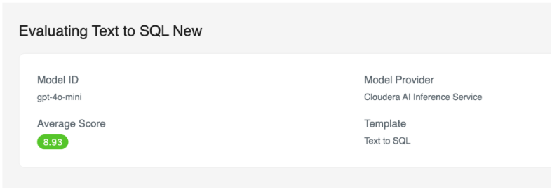
An example of an improved justification:
Score: 10/10. This is an excellent training example. The question is clear and unambiguous, asking for customers registered after a specific date. The SQL query is syntactically correct, uses straightforward logic with a WHERE clause, and directly answers the question. Schema is valid, referencing the existing 'customers' table with the correct column name 'registration_date'. The query demonstrates a fundamental pattern (filtered SELECT) that's essential for SQL training. Pedagogically valuable because it teaches table selection and column filtering effectively.
Question: Retrieve all customers who registered after January 1, 2022
Answer: SELECT * FROM customers WHERE registration_date > '2022-01-01';
Table Schema:
CREATE TABLE customers (
customer_id INT PRIMARY KEY,
first_name VARCHAR(50),
last_name VARCHAR(50),
email VARCHAR(100) UNIQUE,
phone VARCHAR(20),
address TEXT,
city VARCHAR(50),
country VARCHAR(50),
registration_date DATE,
total_orders INT DEFAULT 0
);
Custom Generation¶
Step 1 — Select Custom template¶
Go to the Generation tab and enter your model information. Under Template, select Custom, then click Next.
Step 2 — Proceed to examples¶
Click Next to advance to the examples step.
Step 3 — Load your own examples¶
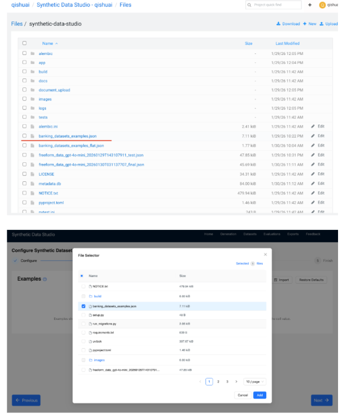
Download the example file and upload it into your project's synthetic-data-studio folder, then provide the local path in the UI.
Download banking_datasets_examples.json
If the file is stored in S3, open a session and pull it to the project filesystem via the terminal first, then provide the local path in the UI.
Imported examples with nested objects will display as [object], [object, object], etc. Nested objects enable generating multiple related datasets in a single run with foreign key integrity — useful when generating three related datasets at once, where each row is a nested JSON object.
Step 4 — Define your prompt¶
Enter a custom prompt describing the data to generate. When working with multiple related datasets, clarify the relationships between them in the prompt.
Download banking_datasets_prompt.txt
Step 5 — Add custom seeds¶
Define your own seeds for the generation run.
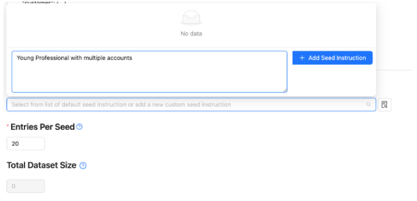
Step 6 — Trigger the job¶
Submit the generation job.
Step 7 — Flatten nested output (optional)¶
If the generated JSON output contains nested objects, run a CAI job to flatten them into CSV files.
Advanced Usage of Synthetic Data Studio¶
This section covers the underlying API mechanics, architectural decisions, and operational limits of SDS — useful for developers integrating SDS programmatically or debugging Agent Studio workflows.
Generation Technique — Freeform¶
SDS uses a technique: "freeform" approach: you supply a natural-language prompt
describing column rules, distributions, and PII-surrogate conventions, and SDS asks an
LLM to produce a JSON array of row objects. Key properties of this technique:
- Prompt-driven column scope — SDS generates exactly the columns described in
schema_json. If a column is not in the prompt, it will not appear in the output. This is by design, not a bug. - FK constraint injection — referential integrity is enforced by listing allowed
parent-pool values directly in the prompt (e.g. "Column
customer_idMUST use only values from this list: [...]"). The LLM is asked to comply; compliance is reliable for 10–100 rows but is best-effort, not deterministic. - PII surrogates — PII-flagged columns receive synthetic surrogate IDs
(e.g.
SYN-CIF-000001) rather than realistic personal data.
Core API Endpoints¶
SDS exposes a REST API accessible at the application's base URL. The interactive API
documentation (Swagger UI) is available at /docs on your deployed SDS instance.
Generate — Synchronous Freeform¶
Generates a synthetic dataset synchronously and returns rows in the response body.
Request body (JSON):
| Field | Type | Description |
|---|---|---|
prompt |
string | Natural-language instructions describing column rules, distributions, and PII conventions |
schema_json |
object | Column definitions: name, type, and optional constraints |
num_records |
integer | Number of rows to generate per call |
technique |
string | Must be "freeform" |
model_id |
string | Model to use for generation (e.g. gpt-4o-mini, CAII endpoint name) |
Response: JSON array of row objects matching schema_json.
Generate — Batch (Async)¶
Creates a CML Job for large-scale generation and returns a job ID immediately. The generated data is written to the SDS filesystem when the job completes.
Request body: Same as synchronous, plus:
| Field | Type | Description |
|---|---|---|
job_name |
string | Display name for the CML Job |
output_filename |
string | Filename for the output JSON on the SDS host |
Response:
| Field | Description |
|---|---|
job_id |
CML Job ID to poll for status |
status |
Initial status ("submitted") |
Evaluate — LLM-as-Judge Scoring¶
Reads a JSON row file from the SDS application's own filesystem (not the Agent Studio host) and scores each row 1–5 using an LLM rubric.
Request body:
| Field | Type | Description |
|---|---|---|
import_path |
string | Path to the JSON file on the SDS host (use eval_import_path returned by generate) |
prompt |
string | Evaluation criteria for the LLM judge |
examples |
array | Scored reference examples to calibrate the judge |
model_id |
string | Model to use for evaluation (ideally different from generation model) |
Scoring rubric:
| Score | Meaning |
|---|---|
| 1 | Wrong columns, invalid types, or obvious real PII leaked |
| 2 | Columns present but multiple type/range/category violations |
| 3 | Schema-compliant and mostly plausible; minor realism or PII concerns |
| 4 | Strong schema compliance, diverse values, safe surrogates |
| 5 | Excellent on all criteria; clearly synthetic, production-demo quality |
A dataset_ready_for_training: true verdict means the data passes the SDS rubric in a
demo context. It does not certify column parity, statistical fidelity, or programmatic
FK integrity — for those, use Direction 3 (evaluate_synthetic_data.py with KS tests and
chi-square gates).
List Datasets¶
Returns a list of all datasets generated in the current SDS instance, including metadata such as name, creation time, row count, and file path on the SDS host.
Get Dataset¶
Returns metadata and a preview of a specific dataset by ID.
Health Check¶
Returns {"status": "ok"} when the SDS service is running and ready.
Synchronous vs Batch Mode¶
SDS exposes two execution paths:
| Mode | How it works | When to use |
|---|---|---|
| Synchronous | Rows are generated inside the HTTP request and returned in the response body | Interactive demos, 25–100 rows per table |
| Batch | SDS creates an async CML Job and returns a job ID immediately; data is written later | Large-scale production generation (thousands+ rows) |
Direction 2 (this lab) uses the synchronous path only. Agent Studio tasks run sequentially and cannot pause mid-pipeline to poll a background CML Job. Batch mode requires a separate workflow in the SDS UI and is outside the scope of the Agent Studio integration.
Demo-Mode Row Cap¶
The synthetic_data_studio_tool enforces DEMO_MODE_MAX_ROWS = 500 as a safety ceiling
on each synchronous SDS call. The practical reliable range for live demos is 25–100
rows per table — above ~100 rows synchronous HTTP timeout becomes a risk depending on
SDS server load. The default rows_per_table in the D2 workflow is 10 (for the fastest
demos) or 25 (for a more populated FK chain).
For training-scale data (10 k–100 k+ rows), use Direction 3 CML Jobs.
Two-Filesystem Architecture¶
Agent Studio and Synthetic Data Studio run as separate CAI Applications on separate
hosts. They do not share a filesystem. When synthetic_data_studio_tool calls generate:
- A local JSON copy is written to
/synthetic_output/<table>_synthetic.jsonon the Agent Studio host — useful for debugging. - SDS writes its own export file on the SDS host and returns
eval_import_path(e.g.freeform_data_gpt-4o-mini_<ts>_test.json).
The evaluate call must use eval_import_path — the SDS-side path. Passing the Agent
Studio output_path to evaluate returns a 404 Not Found from SDS.
Next Steps¶
- Run the synthetic data demo: D2: SDS Integration
- Full synthetic data lab: Synthetic Data Workflows Summary
- Register the tool in Agent Studio: Synthetic Data Studio Tool